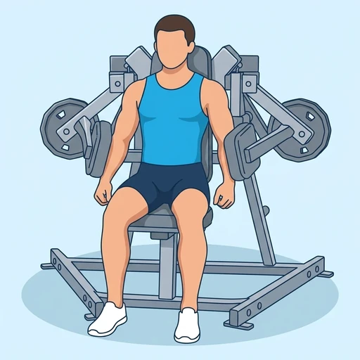
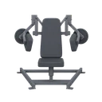

Plate-Loaded Lateral Raise
A seated lateral raise on a plate-loaded machine, where pads bear against the upper arms so the side deltoids lift the load without the hands gripping it.
Shoulders · Plate-Loaded Lateral Raise Machine · Beginner


Muscles worked by the Plate-Loaded Lateral Raise
Primary
Secondary
Also called: side deltoid, lateral delt, side delt, medial deltoid, lateral deltoid.
Equipment

Plate-Loaded Lateral Raise MachineAlso called: iso-lateral raise machine, plate loaded side raise, plate loaded delt raise, iso lateral lateral raise.
How to do the Plate-Loaded Lateral Raise
- Set the seat height so that the pivot of the arm pads lines up with the point of your shoulders when you sit down.
- Load the plate horns evenly on both sides and sit with your back flat against the pad.
- Place the outside of your upper arms against the pads with your elbows bent and your arms hanging down.
- Push out and up against the pads until your upper arms are roughly level with your shoulders.
- Lower under control until your arms are back at your sides, and repeat for the desired number of repetitions.
Form tips
- Set the seat first. If the pivot sits below your shoulder the pads drive your arm across your body instead of out to the side, and the side deltoid stops being the muscle doing the work.
- Push with the arm, not the hand. The handles are there to stop your arms sliding off the pads -- gripping hard pulls the biceps and forearms into a raise that should be all deltoid.
- Stop at shoulder height. Going higher hands the last part of the rep to the traps, and the machine will happily let you.
At a glance
| Body part | Shoulders |
|---|---|
| Category | Strength |
| Force type | Push |
| Mechanic | Isolation |
| Difficulty | Beginner |
| Equipment | Plate-Loaded Lateral Raise Machine |
| Goals | Hypertrophy |
| Tags | Knee safe, No axial load, Lower back safe, Shoulder safe |
| MET | 5.0 (metabolic equivalent, for calorie estimates) |
| Unilateral | No |
| Bodyweight | No |
| Dataset id | plate-loaded-lateral-raise |
Plate-Loaded Lateral Raise in German & Spanish
| German | Seitheben an der Scheibenmaschine |
|---|---|
| Spanish | Elevación Lateral en Máquina de Discos |
Descriptions, instructions and tips ship in all three languages in the JSON.
Related exercises
Exercise data (JSON)
The record below is exactly what exercises.json ships for this exercise — names, descriptions, instructions and tips in English, German and Spanish.
{
"id": "plate-loaded-lateral-raise",
"name_en": "Plate-Loaded Lateral Raise",
"name_de": "Seitheben an der Scheibenmaschine",
"name_es": "Elevación Lateral en Máquina de Discos",
"description_en": "A seated lateral raise on a plate-loaded machine, where pads bear against the upper arms so the side deltoids lift the load without the hands gripping it.",
"description_de": "Ein sitzendes Seitheben an einer scheibenbeladenen Maschine, bei dem Polster gegen die Oberarme drücken, sodass die seitlichen Schultern die Last heben, ohne sie mit den Händen zu greifen.",
"description_es": "Una elevación lateral sentado en una máquina de discos, donde unas almohadillas apoyan contra los brazos para que los deltoides laterales levanten la carga sin sujetarla con las manos.",
"category": "strength",
"force_type": "push",
"mechanic": "isolation",
"difficulty": "beginner",
"equipment": "plate_loaded_lateral_raise_machine",
"body_part": "shoulders",
"primary_muscles": [
"lateral_deltoid"
],
"secondary_muscles": [
"anterior_deltoid",
"trapezius"
],
"goals": [
"hypertrophy"
],
"tags": [
"knee_safe",
"no_axial_load",
"lower_back_safe",
"shoulder_safe"
],
"variation_group": "lateral-raise",
"is_unilateral": false,
"is_bodyweight": false,
"instructions_en": [
"Set the seat height so that the pivot of the arm pads lines up with the point of your shoulders when you sit down.",
"Load the plate horns evenly on both sides and sit with your back flat against the pad.",
"Place the outside of your upper arms against the pads with your elbows bent and your arms hanging down.",
"Push out and up against the pads until your upper arms are roughly level with your shoulders.",
"Lower under control until your arms are back at your sides, and repeat for the desired number of repetitions."
],
"instructions_de": [
"Stelle die Sitzhöhe so ein, dass der Drehpunkt der Armpolster im Sitzen auf Höhe deiner Schulterspitzen liegt.",
"Belade die Scheibenaufnahmen auf beiden Seiten gleichmäßig und setze dich mit flach anliegendem Rücken an das Polster.",
"Lege die Außenseiten deiner Oberarme an die Polster, die Ellenbogen gebeugt und die Arme nach unten hängend.",
"Drücke gegen die Polster nach außen und oben, bis deine Oberarme etwa auf Schulterhöhe sind.",
"Senke kontrolliert ab, bis die Arme wieder an den Seiten liegen, und wiederhole für die gewünschte Anzahl an Wiederholungen."
],
"instructions_es": [
"Ajusta la altura del asiento para que el eje de giro de las almohadillas quede alineado con la punta de tus hombros al sentarte.",
"Carga los soportes de discos por igual en ambos lados y siéntate con la espalda apoyada en el respaldo.",
"Coloca la cara externa de los brazos contra las almohadillas, con los codos flexionados y los brazos colgando.",
"Empuja hacia fuera y hacia arriba contra las almohadillas hasta que los brazos queden aproximadamente a la altura de los hombros.",
"Baja de forma controlada hasta que los brazos vuelvan a los costados y repite el número de repeticiones deseado."
],
"tips_en": [
"Set the seat first. If the pivot sits below your shoulder the pads drive your arm across your body instead of out to the side, and the side deltoid stops being the muscle doing the work.",
"Push with the arm, not the hand. The handles are there to stop your arms sliding off the pads -- gripping hard pulls the biceps and forearms into a raise that should be all deltoid.",
"Stop at shoulder height. Going higher hands the last part of the rep to the traps, and the machine will happily let you."
],
"tips_de": [
"Stelle zuerst den Sitz ein. Liegt der Drehpunkt unter deiner Schulter, führen die Polster den Arm quer vor den Körper statt zur Seite, und die seitliche Schulter ist nicht mehr der arbeitende Muskel.",
"Drücke mit dem Arm, nicht mit der Hand. Die Griffe sind nur dafür da, dass die Arme nicht von den Polstern rutschen — festes Zugreifen holt Bizeps und Unterarme in ein Heben, das reine Deltamuskelarbeit sein sollte.",
"Stoppe auf Schulterhöhe. Weiter nach oben übergibt den letzten Teil der Wiederholung dem Trapez, und die Maschine lässt dich gewähren."
],
"tips_es": [
"Ajusta primero el asiento. Si el eje queda por debajo del hombro, las almohadillas llevan el brazo cruzado por delante del cuerpo en lugar de hacia el lado, y el deltoides lateral deja de ser el músculo que trabaja.",
"Empuja con el brazo, no con la mano. Las empuñaduras solo sirven para que los brazos no resbalen de las almohadillas: apretarlas mete el bíceps y el antebrazo en una elevación que debería ser puro deltoides.",
"Detente a la altura del hombro. Subir más entrega la última parte de la repetición al trapecio, y la máquina te dejará hacerlo sin protestar."
],
"met": 5.0,
"images": {
"flat": {
"start": "images/flat/plate-loaded-lateral-raise-start.webp",
"peak": "images/flat/plate-loaded-lateral-raise-peak.webp"
}
}
}Fetch just this exercise
const { exercises } = await fetch(
"https://exercise-dataset.com/exercises.json"
).then(r => r.json());
const ex = exercises.find(e => e.id === "plate-loaded-lateral-raise");Free for personal and commercial in-app use with attribution (“Exercise data by RepDB”) — see the license and ready-made attribution snippets. Redistributing the data as a dataset or API is not permitted.